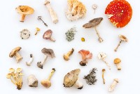

Sofía Pascal
Sofía PascalMáquina de vectores de soporte (SVM). Machine Learning para principiantes.

guardar
Una guía completa para comenzar a practicar el Machine Learning (ML) en Python para principiantes con ejemplos prácticos...